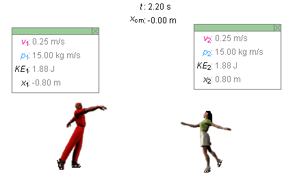
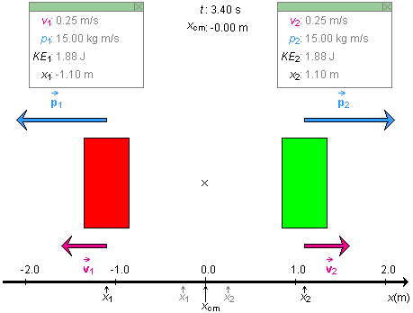

Instructions
This page is designed to get you started using the applet. The applet should be open. The step-by-step instructions on this page are to be done in the applet. You may need to toggle back and forth between instructions and applet if your screen space is limited.
You should be familiar with the operation of the applet as described in Help.
Click Reset  .
.
Set the masses of both skaters to 60 kg. Play  the motion and pause it
the motion and pause it
 . You should get
a display similar to that shown in Figure 1 below.
. You should get
a display similar to that shown in Figure 1 below.

Figure 1
Notice that the center of mass (CM) of the two-skater system is at xCM = 0. The x-axis is not shown in this display, but see Figure 2 below.
With the CM at x = 0 and the masses of the two skaters equal, the positions of the two skaters should equally far from 0. Indeed, they are indicated in the Data boxes as x1 = -1.10 m and x2 = 1.10 m, respectively. All other quantities, speed, magnitude of momentum, and kinetic energy, are shown to have equal values for the two skaters.

Without changing any of the settings, click the Show Blocks
radio button  .
.
The skaters are replaced by blocks, which is the way a physicist would tend to look at the system. In this mode, the applet also shows an x-axis and the CM of the two-block system. See Figure 2 below. Note that none of the data in the two Data boxes change when the display is switched from Skaters to Blocks or vice versa. The two kinds of systems are treated as equivalent.

Figure 2
Click Replay  .
Make sure the two masses are still set at 60 kg and that the
two blocks are shown.
.
Make sure the two masses are still set at 60 kg and that the
two blocks are shown.
The CM will be at 0 and the positions of the two blocks at x1 = -0.25 m and x2 = 0.25 m, respectively.
Drag the x-axis to the left until the CM is at 1.00 m. The two blocks will be at x1 = 0.75 m and x2 = 1.25 m.
Play the motion, and pause it somewhere. Compare the data displayed in the two Data boxes with those shown in Figure 2 above. The applet should show the same values as those in Figure 2, except for the values of the x-coordinates of the two blocks.
Click Replay and drag the x-axis to the right until the CM is at 0 again. The block's masses should still be 60 kg each.
Increase the mass of block 1 to 120 kg. The position of the CM should move left to -0.08 m.
Play the motion, and pause it somewhere, with the velocity and momentum vectors displayed. The magnitude of the velocity of the 60-kg block is twice that of the 120-kg block, but the momenta of the two blocks have the same magnitude. The kinetic energy of the smaller block is twice that of the larger block.